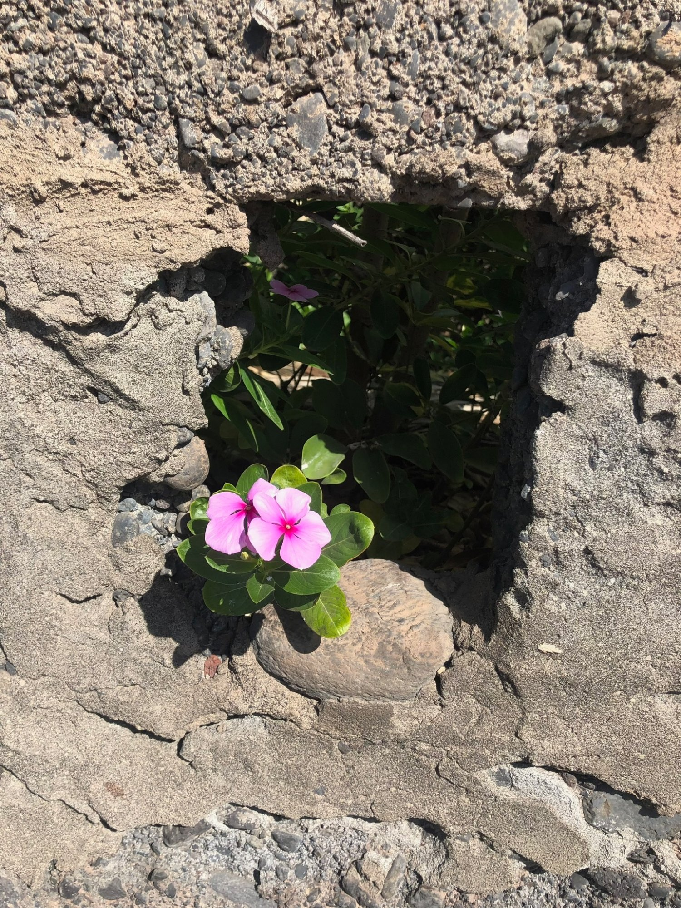

Måske genkender du noget af dette:
Er du kommet dertil, at du nu skal reagere på de signaler, din krop og dit sind sender dig? Gennem samtalen kan du tage ansvar for dig selv på en selvkærlig måde og skabe mere energi og kærlighed i og omkring dig.
Nogle gange kan få samtaler være nok til at skubbe til en frugtbar proces. Andre gange skal vi mødes flere gange. Hyppigheden for samtalerne vil variere. Du vil mærke, hvad der er brug for.

Ordet kommer af de to græske ord Psyche: sjæl, sind og ånd, og Theropeia: behandling, pleje og helbredelse.
Mit fokus som psykoterapeut er at hjælpe med at fjerne de indre forhindringer, der bremser din udvikling som menneske samt din livsudfoldelse.
Gennem samtalen kan du tage ansvar for dig selv på en selvkærlig måde og skabe mere energi og glæde i hverdagen.
Forskning viser, at psykoterapi har en positiv effekt på mange psykiske problemer. Det har det, fordi det:
Jeg er uddannet indenfor en integral ramme. Det betyder bl.a., at min terapi kan tage afsæt i forskellige psykologiske retninger. Nogle gange vil den psykodynamiske give mest menning, andre gange vil jeg vælge en kognitiv, en humanistisk eller en eksistentiel tilgang. Værkstøjskassen er stor
Udover bl.a. Jungs teori, læren om det ubevidste og skyggearbejde, er jeg især inspireret af Enneagrammet, et psykologisk og filosofisk system, der bruges til at forstå personlighedstyper og motivationsmønstre. Det er et reffineret redskab til personlig udvikling, kommunikation og konflikløsning.
Jeg har i løbet af min uddannelse arbejdet bla med mine egne personlige historier, mine overbevisninger og reaktionsmønstre. Ved at gå vejen selv har jeg fået en vågenhed i forhold til hvad der sker i vores møde. Jeg er uddannet og trænet i at holde rummet og bevidne det, du fortæller. Hos mig er alt velkomment - og du er hjertelig velkommen!
"Ved at sige tanker højt, ved at flytte en erindring fra vores eget indre over til et andet menneske kan den få lov at findes i verden — og sammen kan vi gøre noget ved det."
Jeg er frem til foråret 2028 under uddannelse som psykoterapeut på Vadum Dahl Instituttet i København. Uddannelsen er båret af et holistisk og spirituelt syn på mennesket. Det præger min egen praksis.
Uddannet folkeskolelærer. Diplomuddannelse i drama og teater. Mange års erfaring med undervisning af børn, unge og voksne, kursusaktivitet og udgivelser af undervisningsmaterialer. Teaterarbejde med mennesker fra tre til tres år, hvor leg, samarbejde, skaberkraft og det hele unikke menneske er i fokus. Mange års praktisering af yoga, yoga nidra og meditation.
Alt det praktiske du har brug for at vide, inden vi mødes.
Kontakt mig i første omgang på mail eller sms for en aftale om en 15 minutters uforpligtende telefonsamtale.
Samtalerne foregår på adressen: Nordtoft 47, 9000 Aalborg.
Kontakt migTræningsklient session
75 minutter
Uforpligtende samtale
15 minutter — telefonisk
Online terapi er en mulighed.
NB. Jeg har en venlig og rolig hund i huset.
Som psykoterapeutstuderende har jeg tavshedspligt. Det, du deler med mig, forbliver mellem os.
Jeg indgår i fortsat supervision med undervisere fra Vadum Dahl Instituttet, hvilket sikrer kvaliteten i vores arbejde.
Jeg er medlem af Dansk Psykoterapeutforening og arbejder inden for foreningens etiske retningslinjer.
Du er velkommen til at skrive, hvis du har spørgsmål eller ønsker en indledende samtale. Jeg svarer typisk inden for 1-2 hverdage.
TELEFON
+45 22 85 03 76ADRESSE
Nordtoft 47